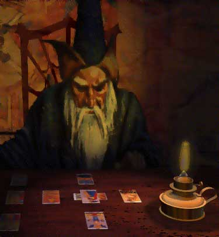
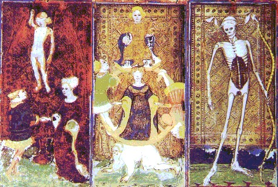

|

“Pero, cuando hayáis visto a Dios, el hierofante os dirá: volveos, y en la sombra que proyectáis en presencia de este sol de las inteligencias veréis aparecer al diablo, ese negro fantasma que véis cuando vuestra mirada se aparta de Dios y cuando creéis llenar de nuevo el cielo con vuestra sombra, ya que los vapores de la tierra parecen agrandarla al subir.”
Eliphas Levi
El Tarot es mucho más que predicción o adivinación. El Tarot no es un chivato sino un instructor. Podemos ver en él el mundo, el universo, podemos vernos a nosotros mismos, a nuestras vidas representadas en cada una de sus etapas. Podemos conversar con sus figuras, preguntarles y respondernos, identificarnos con ellas. O tal vez dejarnos llevar a los paisajes que regentan, obtener sus objetos, su poder...Podemos meditar, proyectar, podemos cambiar nuestra visión y transformarnos. Podemos dibujar con el Tarot el camino del Árbol de la Vida, aplicar las enseñanzas de los planetas y sus relaciones con los signos del zodiaco, el simbolismo de los números, la magia de los colores.
Podemos aprender a sacar lo que más se resiste en nuestra mente, lo latente, lo que no nos atrevemos a aceptar y lo que podemos conseguir, prometer y cumplir.
Es el juego que nos enseña a jugar, a tomar el papel que queramos en nuestra existencia. Nos reconcilia con lo más atávico y nos lanza al eterno cambio purificador.
-Origen y desarrollo
Su origen realmente es desconocido. Existen muchas teorías distintas pero tan solo tenemos algunas fechas sobre su desarrollo. La palabra Tarot parece tener un origen egipcio: TAR como Camino y RO, ROS, ROB como Real.
En el año 1442 aparece la baraja Visconti-Sforza. En 1460 un grabador anónimo de Ferrara editó el Tarot de Mantenga, cargado de la simbología iniciática. En 1480 un dominico maldijo el Tarot denominándolo “opus diaboli”.
A finales del siglo XV el Tarot se popularizaría en Europa gracias a la edición del Tarot de Marsella en diferentes versiones.
En el año 1781, Court de Gëbelin tomó el Tarot como medio de predicción y contribuyó a su renacimiento. Que tendría mayor difusión gracias a la imprenta.
En 1784 Etteilla, (ocultista francés) publica su propio Tarot y escribe su libro Maniére de se recréer avec un jeu de cartes nommés Tarot. Fue el primero en popularizar la adivinación por medio del Tarot para una amplia audiencia, y en consecuencia el primer tarotista “profesional” conocido en la historia.
En 1856 Eliphas Levi defiende en Dogma y Ritual de Alta Magia los orígenes hebreos del Tarot. Levi junto a Papus estableció la relación entre los 22 Arcanos Mayores y las 22 letras del alfabeto hebreo. Más adelante Crowley intercambiaría La Estrella con El Emperador, y Fuerza con Justicia.
En 1863 Paul Cristian relacionó el Tarot con la astrología en L´Homme Rouge des Tuilleries.
En 1885 William Westcott, fundador de la Hermetic Orden of the Golden Dawn, publica Magical Ritual of Sanctum Regnum, manual dedicado a indicar los pasos a seguir en las ilustraciones de los Arcanos Mayores, dando al mago iniciado la información para realizar la Gran Obra.
En 1889, Stanislas da Guaita, manda diseñar un nuevo “Libro de Thot”: Les 22 Arcanes du Tarot Kabbalistique.
Papus mandaría imprimir el Tarot des Bohemiéns, dirigido especialmente a los miembros de L´Ordre Massonique de Martinistes.
En 1896 René Falconier publica la primera baraja de Tarot inspirada en el arte egipcio.
A partir de 1900, Waitte, P.Foster Case, Crowley y otros autores diseñaron sus propios mazos. (buscar).
El Thelemic Tarot de Lon Milo DuQuette, Tarot of Ceremonial Magick es un Tarot bastante explícito que contiene muchos datos llenos de utilidad para el camino.
-El Tarot como herramienta de proyección astral
Podemos utilizar las cartas como puertas simbólicas que nos transporten a un paisaje astral elegido en cierto modo.
Otras puertas simbólicas a utilizar son las runas y los símbolos alquímicos.
Lo que hay que hacer es escoger una carta con la que se quiera trabajar, que se quiera explorar y comprender mejor, o simplemente que represente para nosotros un lugar o una experiencia que queremos visitar o vivir. Luego nos concentraremos en la imagen hasta que sepamos que si cerramos los ojos, la imagen o al menos los contornos de la misma seguirán dibujándose en nuestros párpados. Intentaremos mantener la imagen mentalmente el mayor tiempo posible dejando que nos envuelva y nos guíe.
lo demás es cuestión de dejarse llevar.
Las cartas más favorables para esta práctica son El Sol, La Templanza, La Estrella y las copas de los arcanos menores. (Ver Tarot y Cábala, J.A. Portela, pág.407.)
- Meditación con el Tarot
Cada carta contiene símbolos que operan a distintos niveles que se irán esclareciendo con tiempo y estudio. Para meditar con una carta que se elija hay que detenerse en la imagen, en cada detalle, forma, dibujo...Luego podemos leer sobre el simbolismo de la carta. Después de unos minutos de reflexión, hay que memorizar la imagen y su simbolismo básico. Después cerramos los ojos, nos relajamos y nos disponemos a interaccionar con la carta. Puedes recibir enseñanzas cada día a través de las cartas. Y al mismo tiempo podrás sentir el Tarot como un organismo articulado vivo que habla y se relaciona contigo.
También puedes combinar varias cartas si te interesa tratar una temática en especial. Las relaciones las estableces tu. La interpretación debe ser siempre un ejercicio de libertad. Como diría Nietzsche, no hay hechos, sino interpretación.

|
 RSS
RSS